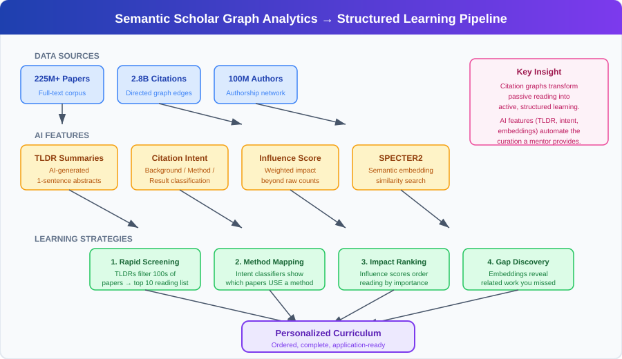

Semantic Scholar API
Semantic Scholar is a free, AI-powered academic search engine developed by the Allen Institute for AI (AI2). Its API provides programmatic access to a corpus of over 200 million papers, complete with citation graphs, author information, and AI-generated summaries.
API Base URL: https://api.semanticscholar.org/graph/v1
Website: semanticscholar.org
Overview
Semantic Scholar goes beyond keyword matching to provide semantic search -- understanding the meaning of queries to find relevant papers even when exact terms don't match. Its citation graph enables traversal of the entire academic knowledge network.
Background / Theoretical Foundations
Academic search has evolved through three generations: keyword matching (Google Scholar, 2004), citation-graph analysis (PageRank-style algorithms), and semantic understanding (embedding-based retrieval) [^3]. Semantic Scholar represents the third generation, using transformer-based models to understand paper meaning rather than just matching keywords.
The platform was founded on the insight that the volume of scientific literature (over 5 million new papers per year across all fields) exceeds any human's ability to survey comprehensively [^1]. AI-powered search and recommendation systems are necessary infrastructure for modern research — and are especially critical for AI research automation systems that need to verify novelty and find relevant prior work programmatically.
Learning application: For students entering a new field, Semantic Scholar's citation graph provides a structured way to map the intellectual landscape. Start with a known seminal paper, traverse its citations (who cited it?) and references (what did it build on?), and you can reconstruct the field's evolution in hours rather than weeks. The API makes this systematic — a script can build a reading list ordered by influence and recency.
Role in AI Research Automation
Semantic Scholar is a critical component of The AI Scientist:
- Novelty checking -- During idea generation, The AI Scientist queries Semantic Scholar to verify that proposed ideas don't duplicate existing work
- Literature review -- During manuscript generation, the system runs up to 20 search rounds to find relevant citations
- Citation justification -- For each potential citation, the system generates a textual justification for inclusion
Key API Endpoints
Paper Search
GET /paper/search?query=<text>&limit=10&offset=0
Returns papers matching the query with metadata: title, abstract, authors, year, citation count, venue.
Paper Details
GET /paper/{paper_id}
Retrieve detailed metadata for a single paper by Semantic Scholar ID, DOI, arXiv ID, or other identifiers.
Citation Graph
GET /paper/{paper_id}/citations
GET /paper/{paper_id}/references
Traverse incoming citations and outgoing references.
Author Search
GET /author/search?query=<name>
Find authors and their publication lists.
Academic Graph Analytics and AI Features
Beyond basic search, Semantic Scholar provides AI-powered features that make it uniquely valuable for research automation and learning:
TLDR Summaries
Semantic Scholar generates one-sentence TLDR summaries for papers using a fine-tuned language model. These summaries are available via the API (tldr field) and enable rapid screening of large paper sets — critical for Autoresearch-style pipelines that need to evaluate hundreds of candidate papers per experiment cycle[^10].
Citation Intent Classification
The platform classifies citation relationships into categories (background, methodology, result comparison), going beyond simple citation counts to reveal how papers relate to each other[^11]. This is particularly valuable for automated experiment design, where understanding whether a paper uses a method vs. merely mentions it determines whether it's a relevant baseline.
Influence Score and Citation Velocity
Semantic Scholar computes influence scores that weight citations by their context and intent, providing a more nuanced measure of paper impact than raw citation counts[^1]. Citation velocity (citations per year since publication) helps identify rapidly-rising papers that may signal emerging research directions — a key input for tracking AI research pipelines.
Bulk Data Access
For large-scale bibliometric analysis, Semantic Scholar provides dataset releases containing the full academic graph (225M+ papers, 2.8B+ citation edges). These bulk datasets power research on science-of-science questions — such as how ideas propagate across fields, which is directly relevant to cross-cutting connections analysis[^12].
Application for AI-Assisted Subject Learning
For learners aiming to master a specific subject for real-world application, Semantic Scholar's graph analytics enable a structured learning strategy: 1. Identify foundational papers using influence scores to find the most-cited works in a domain 2. Map the methodology landscape using citation intent classification to find papers that use (not just cite) a technique 3. Track the frontier using citation velocity to identify the fastest-growing research areas 4. Build reading lists ordered by dependency — read papers before the works that build on them
This approach transforms passive literature browsing into an active, structured curriculum. Combined with AI tutoring systems (Jurenka et al., 2026), it provides the backend for personalized research education[^9].
Comparison with HuggingFace Papers API
| Feature | Semantic Scholar | HF Papers API |
|---|---|---|
| Corpus size | 200M+ papers (all fields) | AI/ML papers only (arXiv) |
| Citation graph | Full graph traversal | No |
| Daily curation | No | Yes |
| Semantic search | Yes | Keyword only |
| Rate limits | 100 req/5 min (unauthenticated) | No limit (CDN-cached) |
| API key | Optional (higher limits) | Not needed |
Use in Building Research Knowledge Bases
Combining Semantic Scholar with HuggingFace Papers: - HF Papers for daily discovery of new AI research - Semantic Scholar for deep citation analysis and cross-domain literature
Current State / Latest Developments
As of 2026, Semantic Scholar has expanded significantly:
-
SPECTER2 embeddings: The latest version uses SPECTER2 (2025), a multi-task embedding model that represents papers in a shared vector space, enabling more accurate semantic search and recommendation[^5]. This is a significant upgrade from the original SPECTER model (Cohan et al., 2020).
-
Recommendations API: A new endpoint provides personalized paper recommendations based on a seed set of papers, enabling AI research systems to discover relevant literature more efficiently than keyword search alone[^2].
-
Integration with research automation: The AI Scientist v2 uses Semantic Scholar for novelty checking (verifying that proposed ideas don't duplicate existing work) and literature review (finding relevant citations during manuscript generation)[^6]. The system runs up to 20 search rounds per paper.
-
Open Academic Graph: Semantic Scholar contributes to the Open Academic Graph initiative, linking its corpus with Microsoft Academic Graph and other sources to provide the most comprehensive citation network available[^1].
-
Corpus scale (2025-2026): The platform now indexes over 225 million papers, 100 million authors, 650 million paper-authorship edges, and 2.8 billion citation edges[^1]. The API uses AI-powered relevance ranking (not just keyword matching) and offers bulk search endpoints for programmatic access at scale.
-
MCP server integrations (2025-2026): Multiple Model Context Protocol (MCP) server implementations now bridge AI assistants (Claude Desktop, Cursor, Claude Code) to Semantic Scholar's API[^7]. These servers enable AI agents to perform structured queries like "papers on LLMs published 2023-2025 with 50+ citations" directly within agentic workflows. The most popular implementations (Kuo, 2025; Tang, 2025) have thousands of downloads, reflecting growing demand for AI-mediated literature search.
-
Python client library: The
semanticscholarPyPI package (v0.12.0, March 2026) provides a high-level Python interface with pagination, rate-limit handling, and async support[^8]. This makes it straightforward to build automated literature review pipelines — for example, Autoresearch could use the client to validate paper novelty before running experiments. -
Rate limit improvements: Free access now provides 1,000 requests/second shared among unauthenticated users, with higher limits available via free API keys[^2]. This represents a significant increase from earlier limits of 100 requests per 5 minutes, making Semantic Scholar viable for high-throughput research automation.
Application for AI-Powered Learning
The diagram below illustrates how Semantic Scholar's graph analytics features feed into structured learning strategies:

Semantic Scholar's citation graph provides a powerful tool for structured learning. Students entering a new field can: 1. Start with a known seminal paper 2. Use the citations endpoint to find papers that built on it (forward citations) 3. Use the references endpoint to find papers it built on (backward references) 4. Repeat to map the intellectual landscape
This systematic approach, automatable via the API, reconstructs a field's evolution in hours rather than weeks. Recent work on conversational AI tutors (Jurenka et al., 2026) shows that providing real-time literature-informed suggestions increases the probability of students mastering knowledge components by 4 percentage points on average[^9] — Semantic Scholar's API is a natural backend for such tutoring systems.
Limitations / Challenges
- Indexing lag: New papers take days to weeks to appear in the Semantic Scholar corpus, making it unsuitable for tracking same-day preprints (use HuggingFace Papers API for that).
- Rate limiting: Unauthenticated requests are limited to 100 per 5 minutes. AI research systems making many queries need API keys.
- Citation completeness: Not all citation relationships are captured, especially for papers outside major venues or preprint servers.
- Semantic search quality: While better than keyword matching, semantic search can still miss relevant papers with unusual terminology or framing.
- Corpus bias: The corpus over-represents English-language papers from CS and biomedical domains; coverage of social sciences and humanities is less comprehensive[^1].
- TLDR quality: AI-generated summaries can miss nuance or misrepresent paper contributions, especially for interdisciplinary work — users should verify TLDRs against abstracts for critical decisions.
- Graph staleness: Citation intent classifications and influence scores are computed periodically, not in real-time, so recently-published papers may lack these enrichments.
See Also
- Hugging Face Papers API — complementary API for daily curated papers
- The AI Scientist — primary consumer of Semantic Scholar for novelty checking
- Tracking AI Research — broader research monitoring strategies
- Automated Peer Review — AI evaluation of research quality
- Predictive Simulation Learning — frontier topic where citation analysis reveals emerging trends
- Agentic Tree Search — experiment methodology that benefits from literature-informed branching
- Automated Experiment Design — citation intent informs baseline selection
- Cross-Cutting Connections — bulk graph data reveals interdisciplinary links
- Recursive Self-Improvement — self-improving agents use citation graphs to discover prior approaches
- AI E-Commerce Learning — recommendation system research tracked via citation analytics
- Wiki Quality Benchmarking — benchmarking methodology for evaluating knowledge systems
- Key Papers — curated list of influential papers discoverable via this API
References
[^1]: Kinney, R. et al. (2023). "The Semantic Scholar Open Data Platform." arXiv:2301.10140
[^2]: Semantic Scholar API Documentation. api.semanticscholar.org
[^3]: Lo, K. et al. (2020). "S2ORC: The Semantic Scholar Open Research Corpus." arXiv:1911.02782
[^4]: Ammar, W. et al. (2018). "Construction of the Literature Graph in Semantic Scholar." arXiv:1805.02262
[^5]: Singh, A. et al. (2025). "SPECTER2: Adapting Scientific Document Embeddings for Multiple Tasks." arXiv:2401.04704
[^6]: Lu, C. et al. (2026). "Towards end-to-end automation of AI research." Nature, 651(8107). doi:10.1038/s41586-025-08865-0
[^7]: Kuo, J. (2025). "Semantic Scholar MCP Server." github.com/JackKuo666/semanticscholar-MCP-Server
[^8]: Semantic Scholar Python Client (2026). PyPI package semanticscholar v0.12.0. pypi.org/project/semanticscholar
[^9]: Jurenka, R. et al. (2026). "The Path to Conversational AI Tutors." arXiv:2602.19303
[^10]: Cachola, I. et al. (2020). "TLDR: Extreme Summarization of Scientific Documents." arXiv:2004.15011
[^11]: Cohan, A. et al. (2019). "Structural Scaffolds for Citation Intent Classification in Scientific Publications." NAACL 2019. arXiv:1904.01608
[^12]: Semantic Scholar Academic Graph Datasets. semanticscholar.org/product/api#datasets